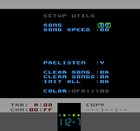

Setup & Utility Menu
The Setup Menu is where you perform several utility tasks. The menu is accessed either via the Navigation Menu or via the shortcut: SELECT and tap UP
Where a value can be modified the usual method of holding A and using U/D/L/R to change the value is used. Where a setting is a Y/N toggle or an OK button, just tap the A button on the selected menu item.
|
here you can select which Song (00 to 07) is 'loaded' into Pulsar's Song editor. |
|
sets the starting Speed Table for each Song |
|
by default, as you enter/edit notes in a Pattern or when you're editing a Drumkit, Pulsar plays the note/sample. In case you want to turn that feature off, here's where you do it |
|
clears the CURRENT song (not all Songs). Only the Song is affected, all other resources (Chains, Patterns, Instruments etc. remain intact) |
|
this function scans all of the Songs and determines which Chains and Patterns are unused. Any unused Chains and Patterns are cleared and they will be available again for functions such as Cloning |
|
clears EVERYTHING! |
|
four 8-bit hexadecimal numbers that are used to control the colours used in the editor Window. Note: only the editor window is affected. Because of the way the NES's screen works (and because I'm a bit lazy), one of the colour elements is not seen on this screen (it's the colour of the left-hand column in most of the editor windows) so you'll sometimes have to jump to another page to see the results of the change. I might improve this in future releases. Also, A and then restart Pulsar (reset the NES) and the colours will be returned to default
|